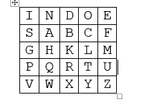

Playfair
Playfair cipher adalah cipher klasik yang ditemukan oleh Sir Charles Wheatstone dan Baron Lyon Playfair[1]. Kekuatan dari algoritma ini adalah pada kuncinya yang menyusun bujursangkar 5x5. Kemungkinan kunci : 25! = 15.511.210.043.330.985.984.000.000.
Namun, playfair cipher bisa dipecahkan dengan teknik frekuensi distribusi ganda yaitu teknik yang menghitung frekuensi kemunculan pasangan dua huruf cipherteks yang kemudian dibandingkan dengan frekuensi pasangan dua huruf pada suatu bahasa. Disamping itu, hasil dekripsi playfair dapat menimbulkan ambiguitas karena saat enkripsi plainteks, semua huruf J pada plainteks diganti terlebih dahulu dengan huruf I.
• Serangan-serangan yang mungkin dihadapi terhadap algoritma kriptografi Playfair antara lain:
1.Exhaustive attack
2.Ciphertext-only attack
3.Known-plaintext attack
4.Chosen-plaintext attack
5. Adaptive-chosen-plaintext attack
6.Chosen-ciphertext attack
7. Teknik analisis frekuensi
• Algoritma kriptografi Playfair dikatakan aman apabila memenuhi kriteria berikut :
1. Persamaan matematis yang menggambarkan operasi algoritma kriptografi sangat kompleks sehingga algoritma tidak mungkin dipecahkan secara analitik.
2.Biaya untuk memecahkan cipherteks melampaui nilai informasi yang terkandung di dalam cipherteks tersebut.
3. Waktu yang diperlukan untuk memecahkan cipherteks melampaui lamanya waktu informasi tersebut harus dijaga kerahasiaannya.
-> Kelemahan algoritma kriptografi Playfair
Kelemahan algoritma kriptografi Playfair adalah pembangkitan kuncinya. Panjang kunci ditentukan sebanyak 36 huruf/karakter dengan setiap hurufnya berbeda sehingga pengguna sulit mencari kunci yang mudah diingat untuk digunakan kembali pada saat dekripsi.
Kelemahan ini bisa saja diatasi dengan pemangkasan huruf-huruf yang berulang dari kalimat yang mudah diingat. Namun, apabila hasil pemangkasan kurang dari 36 karakter, maka timbul masalah baru. Bila karakter sisa diisi secara default, penyerang menjadi lebih mudah memecahkan cipherteks hasil enkripsi.
Metode lain untuk menutupi kelemahan tadi adalah dengan cara membangkitkan secara acak deret karakter untuk menempati kotak 6x6 tersisa yang kemudian disimpan didalam header plainteks.
Kunci pun dibatasi tidak boleh lebih dari 36 karakter sehingga kompleksitas algoritma terbatas sebatas itu. Namun, jika diinginkan, dengan memasukkan kelebihan kunci ke kunci untuk tahapan ke-dua, maka 4 masalah ini bisa diselesaikan.
Contoh Soal :
Plaintext: SERANG MARKAS MUSUH DARI UTARA JAM TUJUH PAGI
Kunci: indonesia
Penyelesaian
1. Bagi setiap huruf menjadi berpasang pasangan
SE RA NG MA RK AS MU SU HD AR IU TA RA JA MT UJ UH PA GI
2. Membuang huruf di kata kunci yang berulang dan huruf j
INDOESA
3. Membuat table 5x5 dengan memasukkan kata kunci yang sudah dibuang huruf berulang dan huruf j, serta ditambahkan huruf yang belum terdapat pada kata kunci sehingga table menjadi penuh.
Jika antara 2 huruf pasangan tersebut tidak satu baris atau satu kolom pada tabel (ingat baris itu mendatar, kolom itu dari atas ke bawah), maka gunakanlah 2 huruf yang menjadi pertemuan dari huruf tersebut. Jika antara 2 huruf yang berpasangan itu berada satu kolom pada tabel, maka masing-masing huruf akan turun 1 tingkat ke bawahnya. Jika antara 2 huruf yang berpasangan berada itu satu baris dalam tabel, maka masing-masing huruf akan ke kanan 1 langkah.
Chiper text: FI QB IH HF XR BA UZ FP KN BQ EP QC QB NS LU PE QM QS PS